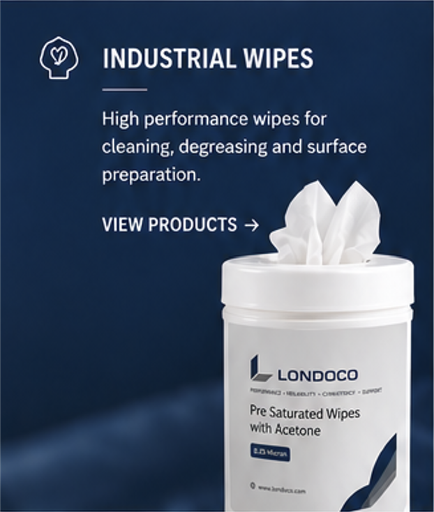
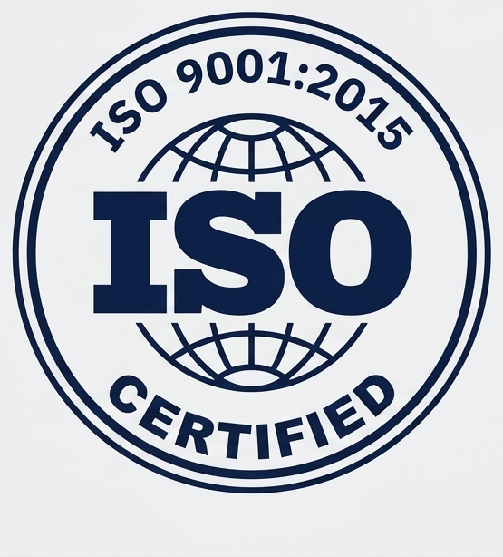
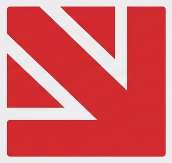
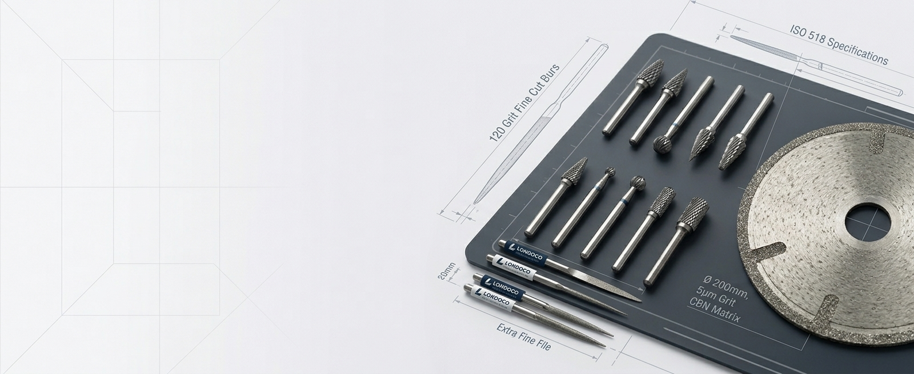
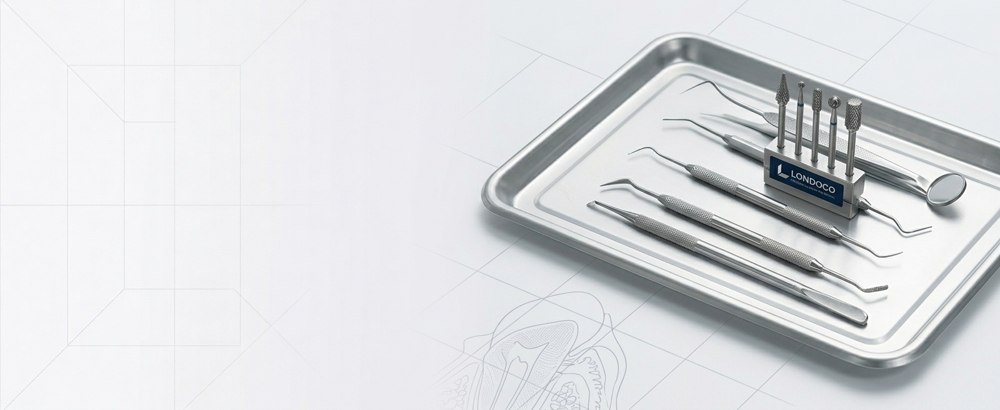
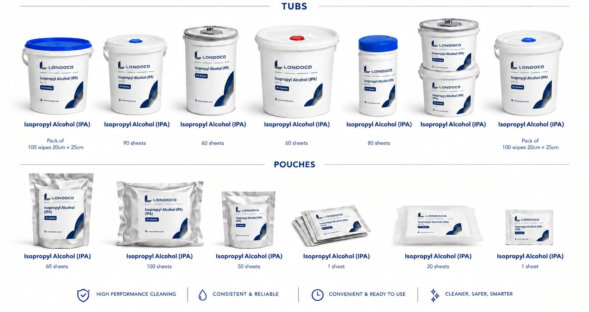

Industrial Wipes
High-performance pre-saturated wipes for cleaning, degreasing and surface preparation.
View products →


High-performance pre-saturated wipes for cleaning, degreasing and surface preparation.
View products →
Precision-engineered rotary burs and technical consumables for demanding applications.
Enquire about products →
Dental consumables and precision instruments for professional applications.
Enquire about products →
Delivering high-end superabrasives, diamond tools, precision manufacturing solutions, and low-lint nonwoven technical wipes across Aerospace, Electronics, Automotive, Defence, and Precision Manufacturing sectors.
Engineered low-lint nonwoven wipes pre-saturated with technical solvent formulations for surface preparation, degreasing, and critical cleaning:
High-performance precision tooling engineered for high-tolerance industrial applications:
Londoco Ltd supplies pre-saturated, solvent-impregnated wipes and precision-engineered rotary burs to industrial, technical and critical-environment customers.
Our core wipe range is manufactured in the UK by an AS9100 Rev D and ISO 9001:2015 certified manufacturing partner, with Made in Britain registration and product traceability.
High-performance pre-saturated wipes for technical and industrial applications, with fabric, fluid and packaging options matched to the task.
Tailored technical cleaning and precision tooling solutions engineered for demanding environments.
IPA wipes supplied by Londoco for precision cleaning around sensitive electronic equipment.
Data centres contain sensitive electronic, optical and electrical equipment, making cleaning-fluid selection particularly important. IPA is widely selected for technical cleaning because it evaporates quickly and leaves minimal residue when correctly formulated and applied.
Different concentrations can be selected according to the task: 99.9% IPA is suited to precision electrical-contact and component cleaning, while 70% IPA can be used for general cleaning and degreasing applications.

Removing fingerprints, skin oils and light contamination left during installation and maintenance.
Precision cleaning where contamination can affect connection quality and signal performance.
Cleaning frequently handled operator interfaces and external control surfaces.
Targeted cleaning after deep maintenance and hardware installation work.
Cleaning external surfaces before relocation, resale, return to service or storage.
Pre-saturated wipes for vehicle production, component assembly, repair, detailing and workshop maintenance.
Automotive production and maintenance involve repeated cleaning of components, tooling and finished surfaces. Pre-saturated wipes provide a consistent amount of cleaning fluid at the point of use and reduce open solvent containers.
IPA is useful for general technical cleaning and surface preparation. Acetone, MEK and heptane provide stronger solvent action for specific residues on compatible substrates.
Removing light oils, fingerprints, dust and process residues from components before assembly.
Cleaning selected surfaces before adhesive, sealant, tape or coating operations.
Targeted removal of contamination prior to selected finishing processes.
Cleaning tools, fixtures, work surfaces and selected mechanical components.
Cleaning hard, non-porous surfaces and operator interfaces with compatible formulations.
Industrial pre-saturated wipes for shipyards, marine maintenance, vessel construction and repair.
Marine construction combines large-scale fabrication with precision work around engines, hydraulics, electrical systems, coatings and composite materials. Pre-saturated wipes deliver controlled cleaning without dispensing solvent from bulk containers.
IPA is suited to light technical cleaning. Acetone, MEK, heptane and ethyl acetate address heavy residue or preparation tasks, subject to substrate compatibility.
Removing grease, oil, fingerprints and residues before bonding, sealing or coating.
Cleaning components, tooling and accessible hard surfaces during routine maintenance.
Cleaning fittings, components and work areas prior to inspection or replacement.
Using low-residue formulations on compatible external surfaces and components.
Cleaning parts and work surfaces between fabrication, installation and finishing stages.
High-performance wipes and precision diamond tooling for machinery, precision components, assembly and MRO.
Manufacturing environments demand repeatable cleaning during production, assembly, inspection and maintenance. Pre-saturated wipes control contamination and eliminate loose rags and open solvent bottles.
Alongside pre-saturated solvent wipes (IPA, MEK, Acetone, Heptane), Londoco supplies technical diamond files, CBN grinding pins, and precision burs for metal finishing and high-tolerance machining.
Removing oils, fingerprints, and dust prior to dimensional inspection or assembly.
Using diamond needle files, rifflers, and CBN grinding pins for high-tolerance metalwork.
Cleaning machine surfaces, jigs, fixtures, and cutting tools during routine service.
Preparing metal and plastic substrates prior to adhesive bonding or structural sealing.
Removing surface films that could interfere with optical gauge measurement.
Precision pre-saturated wipes for aerospace manufacturing, MRO, component preparation and controlled technical cleaning.
Aerospace manufacturing and maintenance demand strict control of contamination, materials compatibility and process consistency. Pre-saturated wipes support controlled cleaning while reducing uncontrolled solvent dispensing.
Manufactured under quality management standards (AS9100 Rev D certified production partner), ensuring full batch traceability and compliance.
Removing fingerprints, oils and process residues prior to assembly or inspection.
Cleaning composite and alloy surfaces before adhesive or sealant application.
Cleaning selected airframe components, tools and work surfaces during MRO activities.
Utilising low-residue IPA formulations on approved components and exterior enclosures.
Targeted contamination control between manufacturing process steps.
High-precision dental burs, diamond instruments, and clinical surface cleaning solutions.
Londoco supplies high-grade dental consumables and precision rotary instruments tailored for clinical practice and dental laboratory technicians.
Our range includes diamond burs, carbide cutters, and specialized surface preparation wipes suited to professional clinical settings.
Quality-led products supported by certified manufacturing and traceability.
Supplying customers across the UK with capability to serve international markets.
Technical product knowledge for demanding industrial and professional applications.
Flexible fabrics, fluids and packaging formats matched to specific requirements.
Londoco Ltd is a UK-based supplier of pre-saturated wipes, technical consumables and precision tools, serving industrial, technical and dental customers across the UK with the capability to serve international markets.
Our core wipe range is manufactured in the UK by an AS9100 Rev D and ISO 9001:2015 certified manufacturing partner, with Made in Britain registration and full product traceability behind every batch.
Submit your technical specifications below or email our engineering team directly at info@londoco.com.